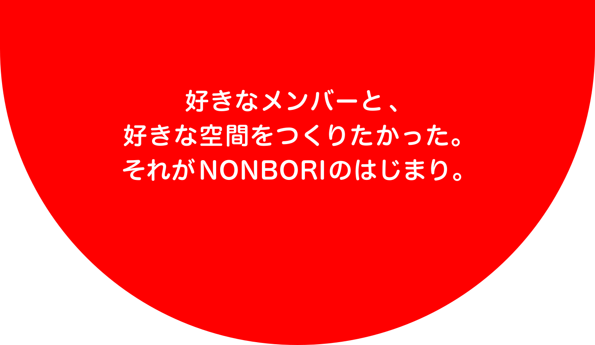
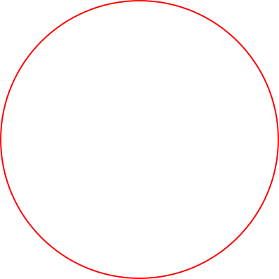
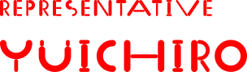
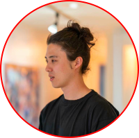
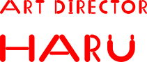
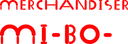
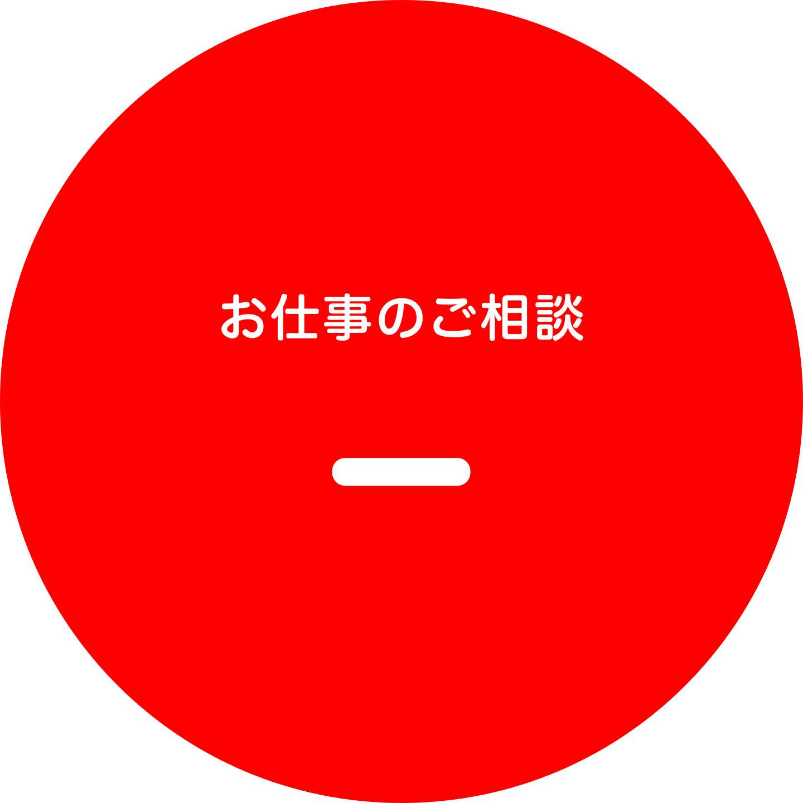

新規事業開発・マーケティングに従事。DMM.com、M3などのメガベンチャーで新規事業の開発等を担当し、今は学習塾の経営が楽しく、週の半分は数学を教えてる。元中南米バックパッカー。


グラフィックデザインを軸とし、アートや工芸など多岐にわたる分野で東京を拠点に活動中。手描きとデジタルを行き来しながらビジュアルを作り上げる。最近の趣味は家具を作ること。

ハマったものには、とことん深掘りしたくなる、おしゃれオタク。アパレル業界でマーチャンダイザーとして流行を作ってきた。こだわりを詰め込んだイベントの中身を素敵なものに仕上げていく。

NONBORIではイベント制作にとどまらず、
Webサイト制作・ブランドデザイン・クリエイティブ全般のご依頼を承っております。
まずはお気軽にご相談ください。